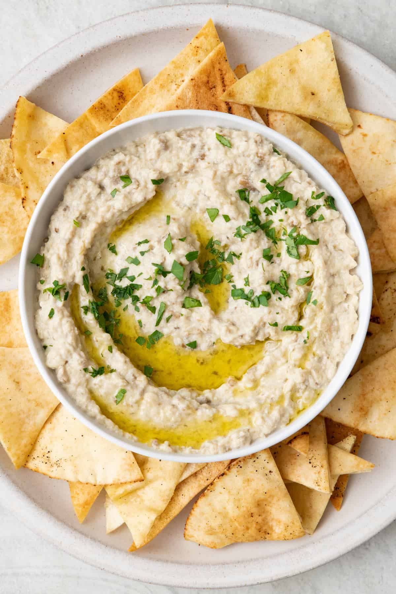

Baba Ganoush

Description:
A delicious dip made using roasted eggplant and seasonings.
Ingredients
- 2 large eggplants
- 3 cloves of garlic, minced
- 2 tablespoons tahini (sesame seed paste)
- 2 tablespoons freshly squeezed lemon juice
- 2 tablespoons extra-virgin olive oil
- 1/2 teaspoon ground cumin
- Salt, to taste
-
Freshly ground black pepper, to taste
-
Chopped fresh parsley, for garnish (optional)
- Extra-virgin olive oil, for drizzling
- Preheat your oven to 400°F (200°C). Place the eggplants on a baking sheet lined with parchment paper.
- Use a fork to prick several holes in the eggplants to allow steam to escape during roasting.
- Roast the eggplants in the preheated oven for about 40-45 minutes, or until the skin is charred and the flesh is soft. You can also grill the eggplants over an open flame until they are charred and tender.
- Remove the eggplants from the oven and let them cool for a few minutes. Once they are cool enough to handle, slice them in half lengthwise and scoop out the soft flesh into a bowl, discarding the charred skin.
- Mash the roasted eggplant flesh using a fork or a potato masher until it reaches a smooth consistency.
- Add the minced garlic, tahini, lemon juice, extra-virgin olive oil, ground cumin, salt, and black pepper to the mashed eggplant. Stir well to combine all the ingredients thoroughly.
- Taste the baba ganoush and adjust the seasoning according to your preference. You can add more lemon juice, salt, or olive oil if desired.
- Transfer the baba ganoush to a serving dish. If desired, garnish with chopped fresh parsley and drizzle some extra-virgin olive oil over the top.
- Serve baba ganoush at room temperature with pita bread, sliced vegetables, or as a dip for various dishes.